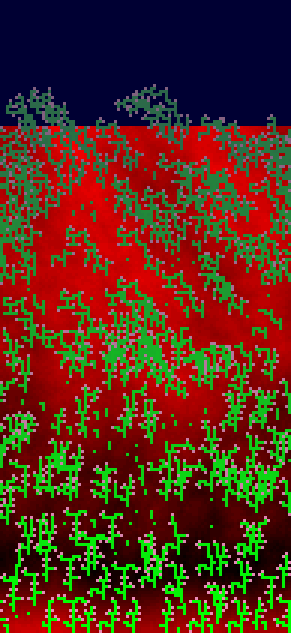
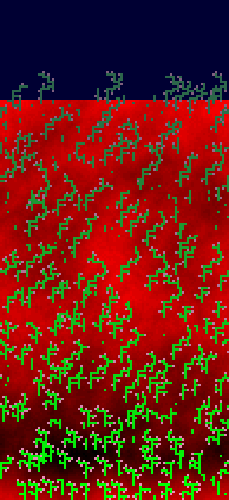
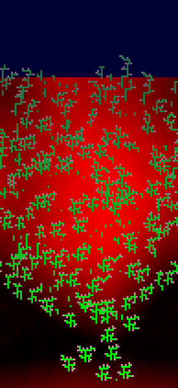
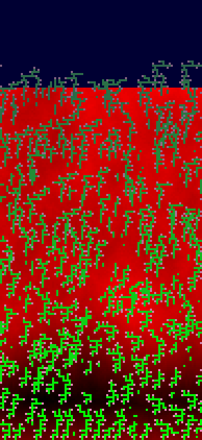
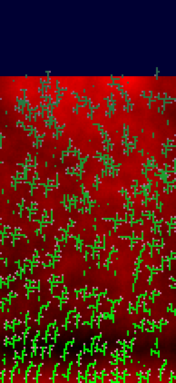

x2-8face
t250 · plants 1 · genomes 1 · plan 2 · h 1
{"exposureAbsorption":1,"faceCount":8,"cellCost":24,"seedCost":320}

x2-canopy
t10000 · plants 265 · genomes 148 · plan 45.7 · h 8.6
{"exposureAbsorption":1,"cellCost":16,"seedCost":192,"shadeGrace":64}

x2-control
t10000 · plants 237 · genomes 130 · plan 34 · h 6.3
{"exposureAbsorption":0}

x2-fertility
t10000 · plants 181 · genomes 108 · plan 32.3 · h 6.1
{"exposureAbsorption":1,"cellCost":16,"seedCost":192,"fertilityLaw":1,"fertilityMin":4,"fertilityGateTick":1500}

x2-raw
t10000 · plants 273 · genomes 172 · plan 35.1 · h 7.7
{"exposureAbsorption":1}

x2-tuned
t10000 · plants 204 · genomes 129 · plan 37.5 · h 6.4
{"exposureAbsorption":1,"cellCost":16,"seedCost":192}
